플레이어를 구현함에 있어 첫 번째로 고려했었던 사항은 Soullike 라는 장르의 핵심적 요소인
"적과의 전투" 를 구현하기 위해 플레이어와 적이 동시에 가지는 여러 특성들, 예를 들어 체력과 같은
스테이터스의 존재와 그것들을 변화시키는 여러 메소드 등을 이후 플레이어와 전투를 할 적을 개발하면서
재활용할 수 있도록 하는 클래스를 설계하는 것이였습니다.
또한 스테이터스와 같이 전투가 가능한 오브젝트들이 가지는 값들의 경우에는 따로 VO클래스를 만들어
추후 DB와의 연동이 용이하도록 하였으며, Serializable 속성을 부여하여 UnityEditor에서 쉽게
관리할 수 있도록 하였습니다.
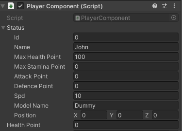▲ [ 자료 3 ] UnityEditor 상에서 표시되는 스테이터스
이후 플레이어가 행사할 수 있는 여러 행위, 구르기와 같은 회피 동작과 공격, "갈고리를 통한 이동" 의
구현을 목표로 개발을 진행하였습니다.
▲ [ 자료 4 ] 플레이어의 동작들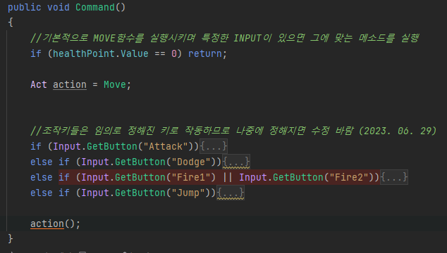▲ [ 자료 5 ] 입력을 받기 위한 스크립트
플레이어의 행위과 관련한 코드들은 기본적으로는 플레이어 컴포넌트 내에서만 제한적으로
사용되고 있기 때문에, 코드를 간결화하기 위해서 대리자와 람다 식을 활용하여 플레이어의 동작을
구현하였습니다.
또한 공격이나 회피와 같은 애니메이션을 동반하는 행위들은 Corutine과 Unity API에서 기본적으로
제공하는 기능인 Animation Event를 통해 구현하였습니다.
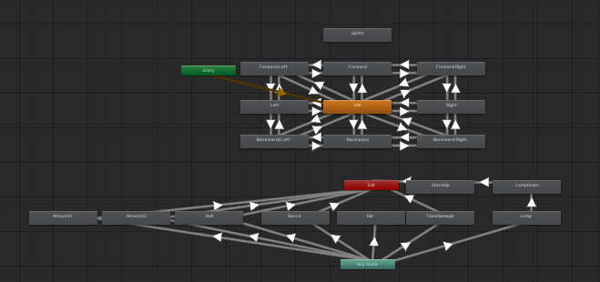▲ [ 자료 6 ] 플레이어의 애니메이션을 제어하는 화면▲ [ 자료 7 ] 플레이어의 회피 애니메이션
1주차 개발 진행 내용
- DB와의 연동 (7/4 ~ 7/7)
게임의 진행 상황을 저장하는 기능이나, 멀티 플레이어 게임을 개발함에 있어 데이터베이스(이하 DB)와의
연동은 필수불가결하며, 이를 위해 SQLite를 활용한 데이터베이스 구축과 연동을 목표로 개발을
진행하였습니다.
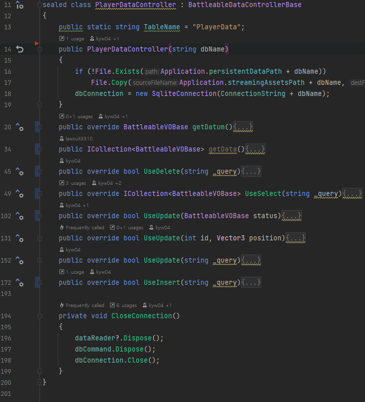▲ [ 자료 9 ] DB와의 연동을 위해 사용하는 컨트롤러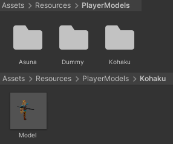▲ [ 자료 10 ] 플레이어 오브젝트들을 모아놓은 폴더
DB와의 연동을 통해 현재 위치를 저장했다가 게임 시작 시에 불러올 수 있게 되었으며, 게임 내에서
현재 설정에 맞는 모델을 직접 불러와 사용하게 하는, 일종의 커스터마이징 기능을 개발 해두었으나,
개발기간의 부족으로 기본적인 Unity-Chan 오브젝트와 로드에 실패 했을 경우 사용하는 더미 오브젝트,
2종류 간에 변환이 가능하도록 구현해두었습니다.
▲ [ 자료 11 ] 게임 시작 시 플레이어 오브젝트를 자동으로 세팅
2주차 개발 진행 내용
- 보스 캐릭터의 제작 (7/10 ~ 7/17)
7/10
보스 캐릭터 또한 플레이어와 같이 전투가 가능한 오브젝트이기 때문에 플레이어를 제작하면서
미리 만들어 두었던 클래스를 재활용하여 제작하게 되었습니다.
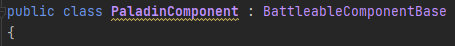 ▲ [ 자료 12 ] 보스 캐릭터의 컴포넌트
보스 캐릭터 또한 플레이어와 같이 전투가 가능한 오브젝트이기 때문에 플레이어를 제작하면서
미리 만들어 두었던 클래스를 재활용하여 제작하게 되었습니다.
7/11
개발 중인 게임의 장르적인 재미를 위해 플레이어가 상대하게 될 보스에게 보다 다양한 행동 패턴들을
부여하는 것을 목표로 1차적으로 보스에게 애니메이션을 적용 시켰습니다.
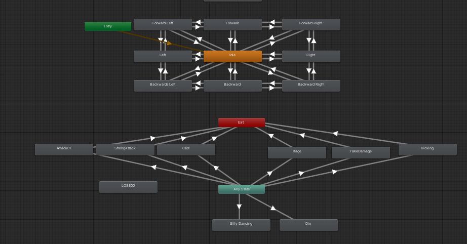 ▲ [ 자료 13 ] 보스 캐릭터의 애니메이션을 제어하는 화면
7/12 ~ 7/14
본격적으로 보스 캐릭터의 공격 패턴을 구현하기 시작했습니다. 플레이어와 마찬가지로 대리자와 람다 식,
코루틴을 통해서 구현이 되어있습니다.
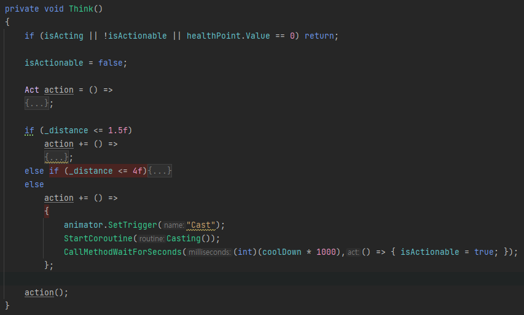 ▲ [ 자료 14 ] 보스 캐릭터의 행동 패턴을 구현하는 코드
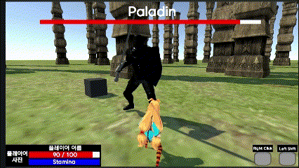▲ [ 자료 15 ] 보스 캐릭터의 일반 공격▲ [ 자료 16 ] 보스 캐릭터의 마법 공격
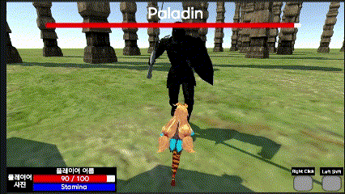▲ [ 자료 17 ] 보스 캐릭터의 근접 공격
2주차 개발 진행 내용
- 보스 캐릭터와 플레이어간의 전투의 구현 (7/11 ~ 7/14)
7/11
게임 전투를 구현함에 있어 "충돌 처리와 데미지 계산을 무기와 캐릭터 어느 쪽에서 진행해야 좋을까" 와 같은
부분에서 많은 고민이 있었습니다.
처음에는 플레이어와 같이 전투 가능한 오브젝트들에서 직접 처리하게 하였지만, 애니메이션을 취해도
충돌체가 애니메이션을 따라가지 않고 그 자리에 그대로 있는다는 문제가 발생했습니다.
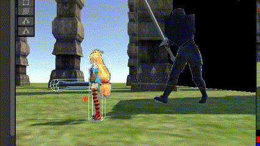 ▲ [ 자료 18 ] 애니메이션 출력 중에도 가만히 있는 Capsule Collider
rig 되어있는 오브젝트에 직접 충돌체를 설정하는 방법으로 이 문제를 해결하게 되었습니다.
다만 이렇게 구현을 할 경우 플레이어 오브젝트에서 직접 충돌처리 하는 것이 아닌, 그 하위의 충돌체가
설정되어있는 오브젝트를 찾아 충돌처리를 진행해야하여 플레이어 쪽에서 충돌 처리를 구현하게되면
관리하기가 불편하다는 문제가 발생했습니다.
그래서 무기 부분을 별도의 오브젝트로 분리하여 Prefab으로 만든 후, 무기에 컴포넌트를 설정하여
무기 쪽에서 충돌 처리를 진행하는 방식으로 구현하였습니다.
▲ [ 자료 19 ] 플레이어의 무기 오브젝트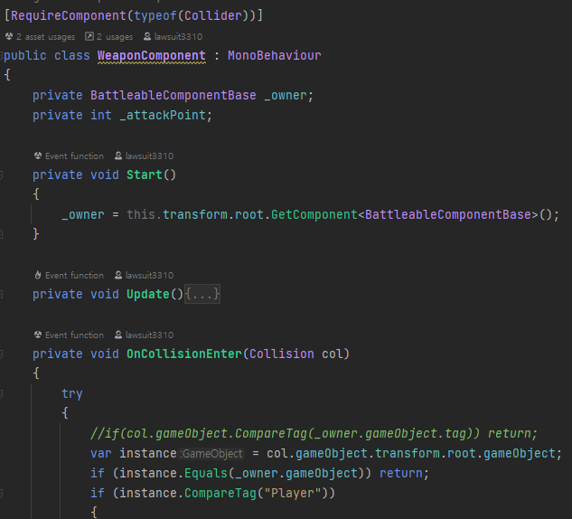▲ [ 자료 20 ] 플레이어 무기에 설정된 컴포넌트
7/12
공격 애니메이션을 출력하는 도중에 무기 오브젝트의 충돌체가 무기 소유자 자신과 충돌하여 충돌 처리가
일어나는 버그가 발생했습니다. Layer를 활용하여 충돌이 일어나지 않게 할 수도 있지만, 보다 근본적인
방법으로 해결하기 위해서 게임이 시작했을 때 자신의 최상위 오브젝트의 정보를 받아온 후, 충돌이 일어난
오브젝트의 최상위 오브젝트와 같다면 충돌 처리를 하지 않고 넘겨버리는 식으로 버그를 수정하였습니다.
7/13
전투를 통해 상호간에 데미지를 입히는 것을 구현하였습니다. 체력과 관련한 변수를 public 형태로
선언해두어 직접 접근해 처리할 수 도 있지만, 이 경우 체력이 변화하였을 때 발생하는, 예를 들어
체력 회복 이펙트나 데미지를 입었을 때의 연출 등을 일일히 체력이 바뀌는 상황에서 같이 처리하게
해주어야해 관리가 힘들어진다는 점과 보안에 관련한 부분에 있어서도 취약해진다는 점이 단점으로
다가왔습니다.
그렇기에 체력과 관련한 변수 자체는 외부에서 접근할 수 없도록 막아두고, 메소드를 통해서만
접근할 수 있도록 하였으며, 플레이어와 보스 캐릭터가 공통적으로 사용할 수 있도록 부모 컴포넌트에서
선언이 되어있습니다.
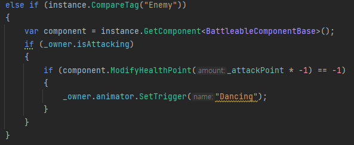▲ [ 자료 21 ] 적과 충돌하였을 때 적에게 데미지를 입히는 코드
7/14
플레이어, 혹은 보스 캐릭터가 사망했을 경우 발생되는 여러 상황을 구현하였습니다.
기본적으로 체력이 변화되는 과정에서 체력이 0 이하로 떨어지면 자동으로 캐릭터의 사망과 관련한
메소드를 실행하게 구현하였습니다만, 적과 플레이어 각각이 사망하였을 경우 발생될 상황이 다르기 때문에
각각의 컴포넌트에서 메소드를 오버라이드 하여 그 자세한 내용을 구현하였습니다.
플레이어가 사망했을 경우에는 게임오버 신으로, 보스 캐릭터가 사망했을 경우에는 다음 스테이지로
방식으로 구현되어있습니다. 또한, 데미지를 입고 입히는 과정에서 일방적으로 메소드를 호출할 뿐만 아니라,
대상이 사망했는지, 회복했는지, 데미지를 입고 버텼는지 등의 정보를 반환하여, 공격자 측에서도 확인할 수
있도록 구현하였습니다.
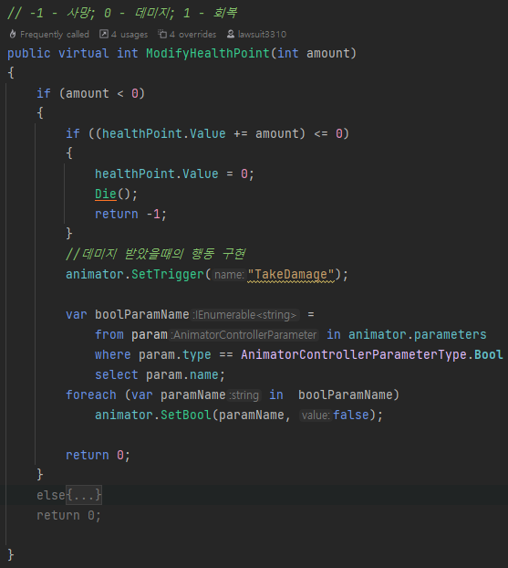
▲ [ 자료 22 ] 데미지를 처리하는 과정에서 자동으로 사망 처리하는 코드
마무리 개발 내용
(7/17 ~ 7/18)
7/17
코드를 작성하다 보면 "특정한 코드를 일정 시간 뒤에 자동으로 실행 시킬 수 있게 하는 기능" 이 필요한
경우가 있습니다. 예를 들어 데미지를 입은 후 일정 시간 동안 데미지를 입지 않는 상태가 되었다가 다시
데미지를 입을 수 있는 상태로 돌아오는 경우 등이 있을텐데, 이런 상황에 대비하여 Unity의 기본 API에서는
Invoke 라는 메소드를 지원하고 있습니다.
하지만, Invoke 메소드에는 몇 가지 단점이 있습니다. 첫 번째로 매개변수를 전달할 수 없다는 것과 두 번째로
게임의 성능적인 면에서 그다지 좋지 못하다는 점, 그리고 실행시킬 메소드를 미리 만들어 두어야하며,
그 메소드의 이름을 String 형태로 전달해야한다는 점 등이 있습니다. 특히 위에서 예시로 들었던 상황처럼
제한된 상황에서만 사용되는 메소드들을 하나 하나 전부 만들어 둔다면, 메소드들이 지나치게 많아지게 되며,
이는 향후 게임의 유지 보수를 진행할 때, 메소드를 관리하는 측면에서 좋지 못한 선택이라고 생각합니다.
그렇기에 이를 해결하고자 Corutine과 Action 대리자를 활용하여 필요할 때 바로 익명 메소드를 인자로
넘겨주어 Invoke의 기능을 수행할 수 있는 메소드를 만들었습니다. 하지만, 이렇게 구현을 하니 각각의
Corutine을 실행시킬 때마다 Corutine 인스턴스가 생성되어 Unity Editor 상에서도 확인 할 수 있을 만큼
심각한 성능저하가 나타났습니다.
성능 저하 문제를 해결하기 위해 다른 방법을 고민하게 되었고, Multithreading을 통해 이를 구현하는것으로
해결할 수 있었지만, Main 이외의 Thread에서 Unity의 API에 접근할 수 없게 되어있었기에 Queue를
활용해서 인자로 전달 받은 Action 대리자를 지정된 시간 동안 대기한 후에 Queue에 push 하여
Update 문에서 이를 pop 시키는 방식으로 이를 구현 할 수 있었습니다.
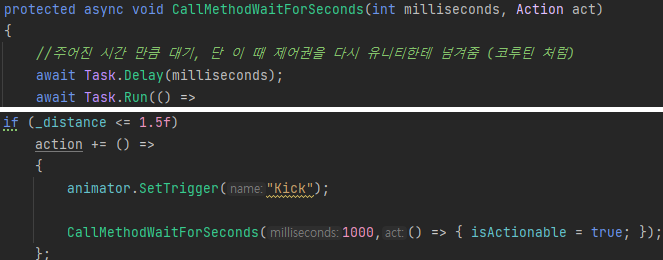
▲ [ 자료 23 ] 메소드의 구조와 그 사용
7/18
UniRx를 활용하여 보스 캐릭터의 코드 최적화를 진행하였습니다.
7/17, Main 이외의 Thread에서 Unity의 API에 접근할 수 없는 문제를 해결하기 위해 자료를 찾아보던 중
UniRx라는 기술을 접하게 되었습니다. UniRx는 "Functional Reactive br Programming(FRP) 를
C# 에 사용할 수 있게 만든 .Net Reactive Extensions 를 일본인인 @neuecc가 Unity 전용으로
최적화 하여 공개한 라이브러리 이다.[입니다.]" [1] 간단하게 이야기 하면, 지속적으로 변수 등을
관찰(Observe)하면서 값의 변화나 이벤트의 발생들을 감지해 바로 처리할 수 있도록 하는 기능입니다.
이를 통해 보스 캐릭터가가 데미지를 입었을 때 발생되는 이벤트나, 체력이 일정 비율 이하로 떨어졌을 경우
패턴을 변화시키는 이벤트 등을 구현할 때 그 조건을 지속적으로 Update문에서 체크하는것이 아니라,
게임 시작시에 한 번 등록(Subscribe)한 후 값이 변화했을 때나 조건을 충족했을 때만 등록된 메소드를
호출하는 식으로 코드를 간결하게 만들 수 있었습니다.
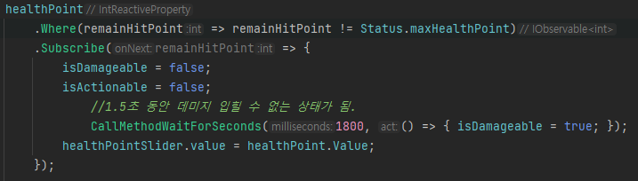
▲ [ 자료 24 ] 체력이 변화하였을 때의 피격처리 및 체력 관련 UI 변화를 UniRx를 활용하여 자동으로 처리하게하는 코드